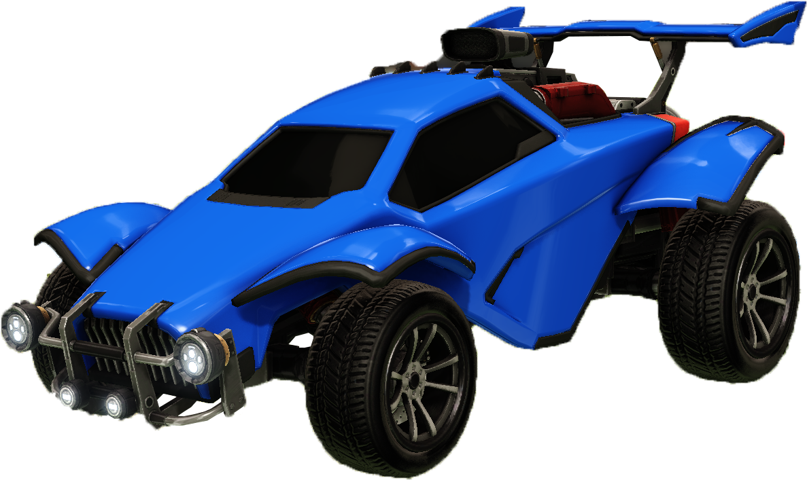
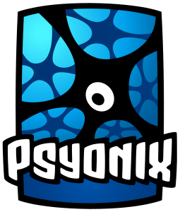

Rocket League er vinsæll net-tölvuleikur sem úthlutar upp að átta leikmönnum í lið á móti hvor öðrum, þar sem markmiðið er að skora í mark hins liðsins með því að nota eldflaugaknúna bíla.
Leikreglur
Leikurinn er ýmist spilaður þrír á móti þremur, einn á móti einum, en mest vinsælast er tveir á móti tveimur. Hver leikur er 5 mínútur, og þegar fimm mínúturnar eru liðnar, þá vinnur liðið sem hefur mest mörk. Ef staðan er jöfn þegar tíminn rennur út, þá fer leikurinn í "overtime", og það lið sem skorar fyrst vinnur.


Saga
Fyrsta útgáfa Rocket League kom út árið 2008 á Playstation 3 leikjatölvunni og hét þá upprunalega "Supersonic Acrobatic Rocket-Powered Battle-Cars". Til að byrja með þá gekk leiknum illa, og ekki margir höfðu áhuga. Það var ekki fyrr en 2013 sem leikurinn byrjaði í fullri þróun, og 2014 sem "Rocket League" var opinberlega tilkynnt sem framhald af fyrstu útgáfu. í dag hefur leikurinn mikið fylgi, hefur stór Esports mót, og er í eigu Epic Games.
Framleiðendur
Leikurinn var framleiddur af leikjagerðar fyrirtæki kallað "Psyonix", sem á uppruna sinn í San Diego, Bandaríkjunum. Það var stofnað af Dave Hagewood, og er það mest þekkt fyrir Rocket League. Árið 2019 þá tilkynntu þeir að þeir höfðu verið keyptir af Epic Games.


Spilendur
Leikurinn er í raun fyrir alla, þar sem hann er athyglisverður fyrir bæði unga sem gamla, og er meðalaldur spilenda á bilinu 22-26. En þó leikurinn er gerður með alla í huga, þá hallast kynjabilið mikið í eina átt, með aðeins 10% spilenda kvenkyn.